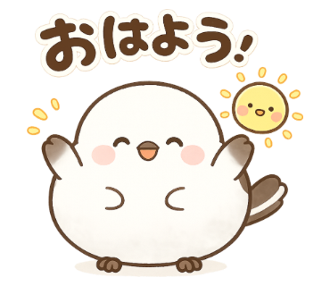
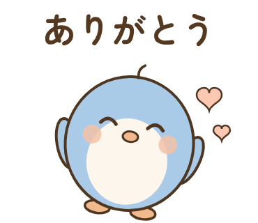
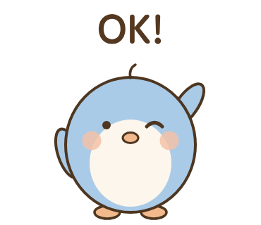
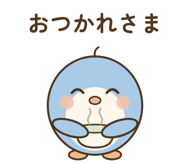
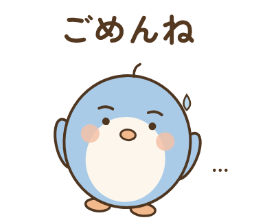
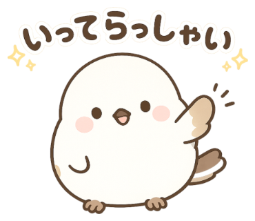
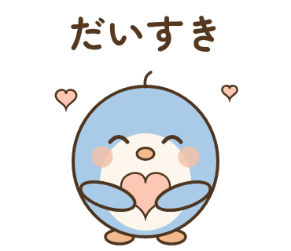

01 おはようLINE Creators Market 申請用に作ったスタンプのプレビューです。背景色を切り替えて、トーク画面での見え方を確認できます。

01 おはよう
02 ありがとう
03 OK!
04 おつかれさま
05 ごめんね
06 いってらっしゃい
07 だいすき| 画像 | サイズ | ファイル |
|---|---|---|
| スタンプ画像 ×8 | 370×320px | 01.png 〜 08.png |
| メイン画像 | 240×240px | main.png |
| タブ画像 | 96×74px | tab.png |
すべてPNG・背景透過・1MB以下。LINE Creators Market に登録して、この10ファイルをアップロードすれば申請できます。
イラストはGPTで生成した原画（stamp/originals/）を stamp/prepare.mjs でLINE規格に変換したもの。プロンプト集は stamp/prompts.md。セリフ違いの追加も同じ手順で作れます。